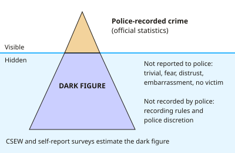

A-level Psychology Year 13 · Topic 6
Criminal and criminological psychology (further content)
This topic looks at crime from start to finish: how it's measured, why people offend, and how the justice system responds.
We will cover crime statistics, social and family influences, mental disorder and psychopathy, eyewitnesses and police interviews.
Then we look at juries and expert witnesses in court, and how we can rehabilitate offenders and prevent crime.
- 7 subtopics
- 247 questions
- Free: 6.1 notes and 10 questions
In this topic
- 6.1Defining and measuring crime: official statistics, victim surveys and the dark figureFree below · 62 questions
- 6.2Social and developmental influences on offending: peers, family, poverty and social learningOpen in Full Marks · 29 questions
- 6.3Mental disorder, psychopathy and offendingOpen in Full Marks · 31 questions
- 6.4Eyewitness testimony in the criminal justice system and the cognitive interviewOpen in Full Marks · 30 questions
- 6.5Police interviewing, interrogation techniques and false confessionsOpen in Full Marks · 26 questions
- 6.6Courtroom psychology: jury decision-making, expert witnesses and the credibility of evidenceOpen in Full Marks · 30 questions
- 6.7Rehabilitation and crime prevention: offender treatment programmes, probation and evaluating effectivenessOpen in Full Marks · 39 questions
6.1 · Free notes
Defining and measuring crime: official statistics, victim surveys and the dark figure

Key points
- Crime is an act or omission that breaks the law and is punishable by the state. Definitions are socially constructed and change over time and place (for example, marital rape became a crime in England and Wales in 1991).
- Police-recorded crime (Home Office official statistics) counts offences that are reported to and recorded by the police. It includes homicide and offences against under-16s and businesses.
- Limitations of police statistics: unreported crime never appears, so totals underestimate crime. Changes in recording rules (e.g. the National Crime Recording Standard, 2002) and police discretion can change totals without any real change in offending. Police-recorded crime lost its National Statistics designation in 2014.
- The dark figure is crime that is committed but does not appear in official statistics. Dark figure = estimated true crime minus recorded crime.
- Reasons for non-reporting include the offence being seen as trivial, fear of reprisal, embarrassment, distrust of the police, a belief that police will do nothing, and not realising a crime occurred (e.g. fraud). Some crimes have no victim to report them (e.g. drug use).
- Victim surveys, such as the Crime Survey for England and Wales (CSEW), interview around 35,000 households. Adults aged 16+ are asked about crimes they experienced in the last 12 months, whether or not they were reported. A separate survey covers ages 10 to 15.
- Strengths of the CSEW: it does not depend on reporting or recording, so it reveals part of the dark figure. Its consistent method allows trends to be compared over time.
- Weaknesses of the CSEW: it relies on memory (recall bias, telescoping) and on honesty about sensitive crimes (e.g. domestic abuse). It excludes homicide, victimless crimes, businesses and people without a household, and it uses a sample.
- Self-report studies ask people, usually anonymously, what offences they have committed. They reveal unconvicted offending but are open to social desirability, lying and exaggeration.
- Evaluate with validity and reliability: no single measure is complete, so triangulation (police data, victim surveys and self-report together) gives the fullest picture. Mis-measuring crime can misdirect policing and funding.
- Calculation method: sample % × population gives an estimated total. For example, 90 victims in 2,000 households is 4.5%, and 4.5% of 20,000 households is 900. If 540 were recorded, the dark figure is 900 − 540 = 360.
In more detail
- Worked dark figure: a victim survey estimates 1.2 million burglaries, but police record 300,000 → dark figure = 1.2 m − 0.3 m = 900,000, so only 25% are recorded.
- Recording problems: in 2014 police-recorded crime lost its official National Statistics status because of concerns about inconsistent recording.
- Offender surveys: the Offending, Crime and Justice Survey asked people about their own offending and found many offences are committed by people who are never caught.
- Exam tip: link each measure to a specific weakness: police data → under-reporting; victim surveys → recall errors and no victimless crimes; self-report → honesty.
Practice
Defining and measuring crime: official statistics, victim surveys and the dark figure: 10 questions
Pick an answer to check it, or open the answer for the explanation.
1. What is meant by the 'dark figure' of crime?
- Crimes committed by people with a mental disorder
- Crimes committed at night
- Crimes recorded by police but never solved
- Crimes committed but absent from official statistics
Show answer
D: Crimes committed but absent from official statistics. The dark figure is the gap between crime actually committed and crime that is reported and recorded in official statistics; surveys try to estimate it.
2. The Crime Survey for England and Wales (CSEW) is best described as which type of measure of crime?
- A victim survey asking households about the last 12 months
- A police-recorded crime count
- A longitudinal study of a birth cohort
- A self-report study of convicted offenders
Show answer
A: A victim survey asking households about the last 12 months. The CSEW interviews a large sample of households about crimes they experienced, whether or not reported, so it can reveal part of the dark figure.
3. A survey of 2,000 households in a town of 20,000 finds 90 burgled in a year. Police recorded 540 burglaries. How many are in the dark figure (one burglary per household)?
- 450
- 360
- 540
- 900
Show answer
B: 360. 90/2,000 = 4.5%; 4.5% × 20,000 = 900 estimated burglaries. 900 − 540 recorded = 360 unrecorded, which is the dark figure.
4. Dev's bike is stolen but he does not tell the police because he thinks they will not bother. Which reason for the dark figure does this best show?
- A change in police recording rules
- Social desirability bias
- Telescoping of events in time
- Doubt that reporting will achieve anything
Show answer
D: Doubt that reporting will achieve anything. Believing the police will not act is a common reason victims do not report. Telescoping and social desirability are problems in surveys, not reasons for non-reporting.
5. Which is a strength of police-recorded crime statistics compared with the CSEW?
- They include homicide and crimes against businesses
- They record unreported crime
- They avoid police discretion
- They are unaffected by changes in recording rules
Show answer
A: They include homicide and crimes against businesses. Police data cover offences such as homicide and crimes against businesses, which a household victim survey cannot capture. They do miss unreported crime.
6. Recorded violent crime rises 15% in one year, but the CSEW shows no change. Which is the most likely explanation?
- Fewer people are reporting crime
- The CSEW sample became too large
- Offenders became less honest
- Police improved how they record offences
Show answer
D: Police improved how they record offences. Stable survey estimates alongside rising police figures suggest a change in recording practice or reporting rather than a real rise in offending.
7. Which of these is a limitation of the CSEW?
- It relies on police discretion
- It uses a very small sample
- It cannot count homicide, as the victim cannot be interviewed
- It only counts convicted offenders
Show answer
C: It cannot count homicide, as the victim cannot be interviewed. The household survey interviews victims, so it cannot count homicide. It also misses victimless crimes and relies on memory, but it does not depend on police discretion.
8. A respondent describes a theft from 14 months ago as happening 'in the last year'. What is this an example of?
- Social desirability
- Demand characteristics
- Forward telescoping
- Researcher bias
Show answer
C: Forward telescoping. Forward telescoping is recalling an event as more recent than it was. It inflates the number of incidents in the survey period and is a recall error.
9. Why is crime described as a 'social construction'?
- It is measured only by social surveys
- It is always committed by groups
- It is caused only by social factors
- What counts as crime depends on laws that vary across time and cultures
Show answer
D: What counts as crime depends on laws that vary across time and cultures. Crime is defined by law, and laws change. Behaviours such as marital rape were legal in England and Wales until 1991, so what counts as crime is socially defined.
10. Anonymous self-report studies ask people about offences they have committed. What is a main threat to their validity?
- They only measure violent crime
- They cannot be repeated
- Respondents may lie, forget or exaggerate
- Only convicted offenders take part
Show answer
C: Respondents may lie, forget or exaggerate. Self-reports rely on honesty and memory, so social desirability, forgetting and bragging threaten validity, though they do reveal unconvicted offending.
Keep going in Full Marks
Full Marks has 62 questions on Defining and measuring crime: official statistics, victim surveys and the dark figure (52 more than here), set out in practice levels. You also get notes and 3D models for all 7 subtopics of Criminal and criminological psychology (further content), plus games, timed exams and past papers.
On your exam board
Not in the AQA and Cambridge specifications.